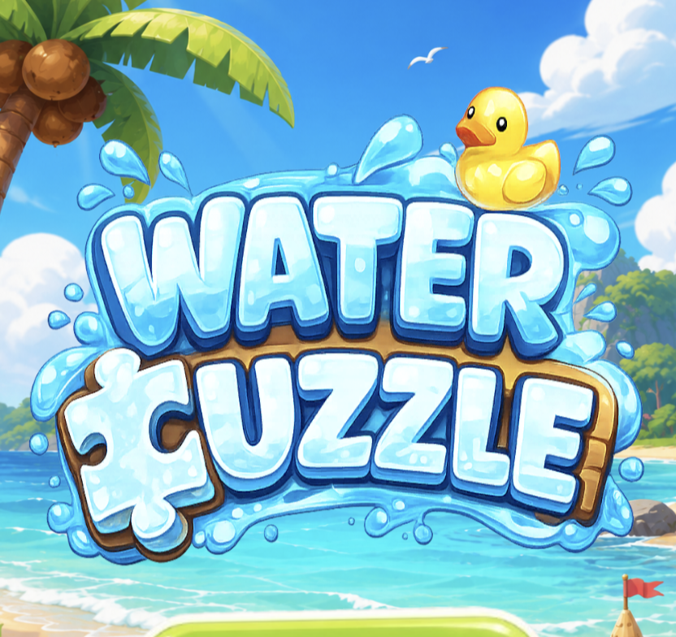
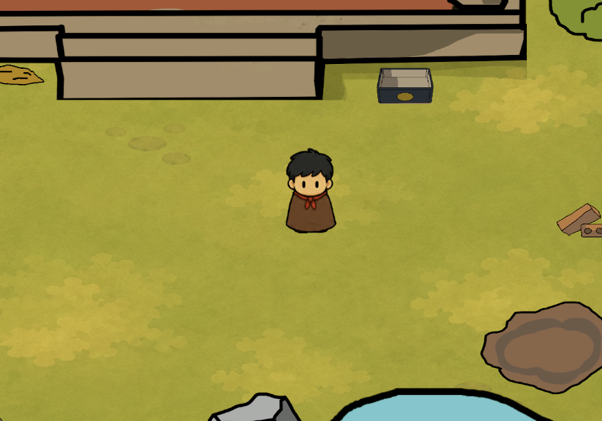

Top 7 / 206Fun Factor · My First Jam! 2026
Design Philosophy
If a song is truly good, people will want to listen to it again, even if the artist isn’t famous. Games are the same.
Top 17 / 206Effort · My First Jam! 2026
FinalistVNG Prompt To Play
8 Playable PrototypesAcross puzzle, action, RPG, and strategy

WATER PUZZLE11/07/2026
Prompt to Play by VNG
Finalist VNG Prompt To PlayPlayable Unity prototype
Design decisions:
- Teach every rule through play, without tutorial text
- Introduce, combine, then escalate mechanics
ProblemResearchPrototypePlaytestIterationFinal

CHICK CHICK21/03/2026
My First Jam! 2026
Top 7 / 206 Fun FactorTop 17 / 206 Effort
Design decisions:
- Teach every rule through play, without tutorial text
- Introduce, combine, then escalate mechanics
ProblemResearchPrototypePlaytestIterationFinal

JOYEUSE
05/04/2026
Personal Project
A 2D cozy fantasy RPG with light auto-combat, linear map progression, class-based builds, loot, skill tree upgrades, and soul collection. Players guide a young human across the tribes of Joyeuse, proving that strength comes from adaptation while growing from village challenger into an All-Round Warrior.

TOWER CONNECTIONS
23/05/2026
GameDev.tv Game Jam 2026
A 2D tower defense roguelite where players build a Nexus network between towers. Instead of relying only on tower shots, enemies are damaged, slowed, poisoned, or stunned when they cross energy links created by tower colors and placement choices.

SLAPABOT
16/05/2026
Casual Game Challenge SEASON 01
A 2-lane arcade reaction runner where players control a robot, read fast enemy patterns, and respond with slash, block, lane switch, and weapon skills. The design focuses on clean one-look readability, strong hit feedback, combo pressure, and short-run mastery.

MR.FIX-IT
05/03/2026
Gamtopia Hanoi 2026
A simulation-puzzle prototype centered on tool selection, circuit-based minigames, and time-pressure execution. Players analyze wiring problems, choose a limited set of tools before each job, and perform repairs through skill-based minigames. The design emphasizes decision-making under constraints, precision, and penalty-driven feedback.

I KNOW WHAT YOU WANT TO DRINK
03/03/2026
Global Game Jam 2026
Designed an emotional inference system where players interpret hidden emotions through environmental cues such as music and surroundings, making decisions under incomplete information. Combined with a branching outcome structure and feedback-driven consequences, the gameplay creates tension through uncertainty and player judgment.

OUTWORLD DOMINION
26/09/2025
Secret Santa 2025
Designed a fast-paced FPS roguelike system focused on continuous combat pressure, synergistic buff progression, and high-skill boss encounters. Players build power through run-based buff choices that significantly alter combat behavior, creating distinct playstyles across runs. The design emphasizes movement, fast decision-making, and replayability through controlled randomness.

WHEEL OF FATE
25/05/2026
IDEA
A dice-driven roguelite board RPG where players roll around a 12-tile wheel of encounters. Each activated tile evolves after use, making rewards stronger but also turning the board into a self-made danger across the run.

GRANDMA'S BACKYARD GARDEN
30/05/2026
IDEA
A 2D top-down exploration and narrative minigame collection set around the back porch and garden of a Mekong Delta home in Vietnam. After being fed lunch by his grandma, a boy runs outside into a hot summer noon to catch bugs, dig worms, feed a baby bird, catch snails, fish, race pill bugs in a Danisa tin, watch ants, create a fire plume, and collect story memories.
Why Wukong Continues to Attract Players
An analysis of why players repeatedly invest in Wukong characters and skins across major games, even though the source character is more than 400 years old.
Archero 2 Economy
Sources, sinks, upgrade pressure, and how resource pacing shapes the next-session goal.
Water Sort Analysis
Cause-and-effect readability, cognitive load, level escalation, and restart friction.
Brawl Stars Retention
Short-session loops, reward cadence, mastery, and reasons to return.
LiveOps Breakdown
Event cadence, progression hooks, player goals, and sustainable content structure.
About me
I design games to understand why players keep making one more decision.
I chose game design because it combines systems thinking, psychology, and rapid experimentation. Puzzle games shaped how I think about clarity; roguelites taught me the value of meaningful trade-offs; mobile games taught me to respect every second of a player's attention.
What motivates meTurning a simple hook into a system worth mastering.
How I workPrototype early, observe players, then iterate on evidence.